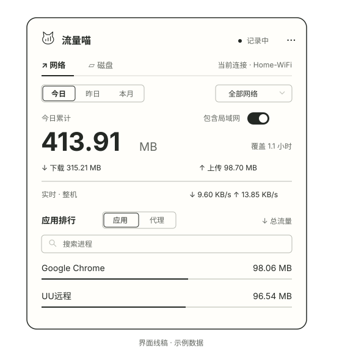
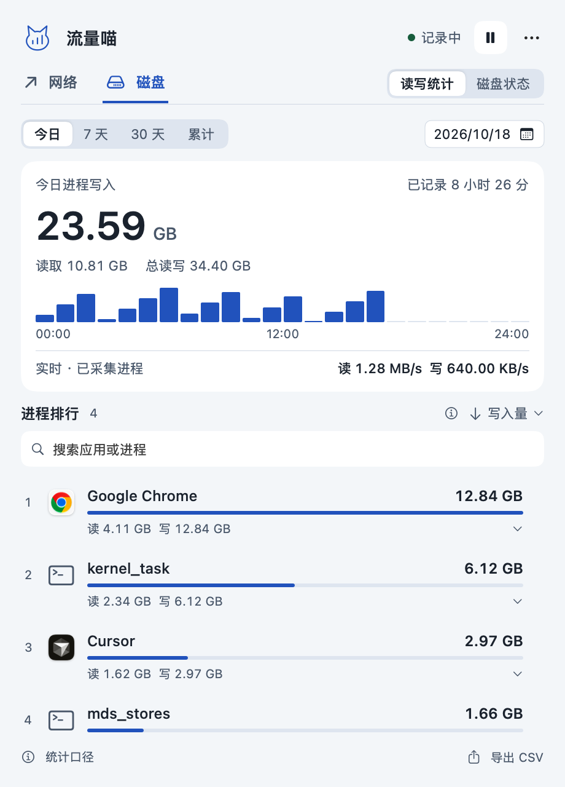
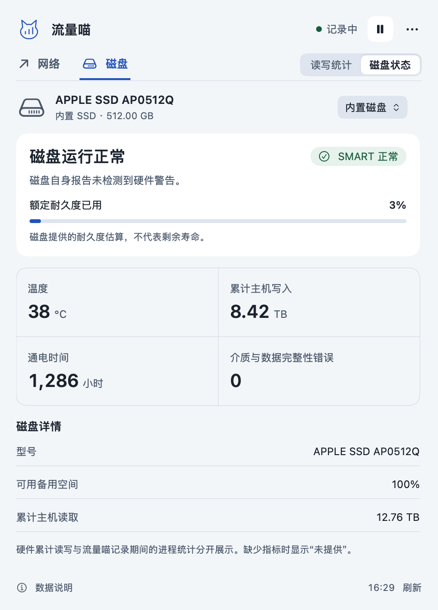

今天用了多少？
今日、昨日、本月自由切换。默认看互联网，网卡总量保留；互联网与局域网按连接估算，让网络备份与上网传输分开看。
时间与范围 / 累计统计给 Mac 的一本小账本 · v1.5.2
谁在下载？谁在写盘？
点开菜单栏，查看网络流量、进程读写与磁盘状态。
下载包不足 1 MB · macOS 13+ · Apple Silicon

01 / 从总量，看到来源
今日、昨日、本月自由切换。默认看互联网，网卡总量保留；互联网与局域网按连接估算，让网络备份与上网传输分开看。
时间与范围 / 累计统计默认看应用排行，代理与 VPN 转发单列。切换、搜索和排序集中在列表上方，可识别的 App 辅助进程合并查看。
应用与代理 / 分开展示按真实 Wi-Fi 名称筛选。你可以拒绝定位权限，继续在“全部网络”下记录。
真实 SSID / 可选授权NEW / 磁盘监控
AI 工具、编辑器与构建任务越来越多。
把后台读写变成能查看、能比较的记录。


原生应用界面，截图使用示例数据；真实可读指标取决于硬件、连接与系统权限。
今日、近 7 天、近 30 天、累计与按日查看。搜索、切换读写排序、展开进程归属，也可导出 CSV。磁盘历史单独保存，已有流量记录继续保留。
进程读写覆盖所有磁盘，不等于 SSD 闪存实际写入；耐久度已用不等于剩余寿命。系统进程可能受权限限制，外置硬盘盒可能不提供健康数据，缺失指标明确显示“未提供”。
此前看到 Codex 长时间写盘的用户反馈，加上日常同时运行的 AI 工具越来越多，让我想知道：磁盘压力究竟来自谁？这次更新先把进程读写与磁盘报告状态摆到菜单栏里，让排查有据可看。相关用户反馈 ↗
02 / 轻巧地装进菜单栏
原生应用，不内嵌浏览器内核。
下载、解压、拖入应用程序，就能开始记录。
¹ 当前 arm64 ZIP 下载包约 740 KB，解压后应用约 2.9 MB，不含本地历史文件；不同构建会略有差异。
03 / 数字也要读得明白
应用与已识别的代理、VPN 分开展示，保留原始计数，不把代理历史硬拆回应用。同一份数据可能被多个进程记录。进程排行不要相加作为整机总量。
全部流量包含局域网备份。互联网／局域网分项按物理接口连接估算，可能遗漏短时连接、未知对端和协议开销，不能用于精确计费。旧历史无法补分，分项仅从升级后累计。
04 / 开始记账
解压后，把流量喵拖入“应用程序”，双击启动即可。
首次运行约 10 秒建立统计基线。读取 Wi-Fi 名称的权限可拒绝；仍可按全部网络记录。
还有几个小问题
不会。网络和磁盘历史分别保存在本机的 ledger.json 与 disk-ledger.json 中，不记录通信内容，不包含遥测。导出的 CSV 由你选择保存位置。
当前应用为临时签名、未进行 Developer ID 签名和公证。确认下载来源后，可按系统设置“隐私与安全性”的提示允许打开，无需关闭系统安全功能。
1.4.0 起选择“安装并重启”即可应用内更新，历史和设置保留，失败时恢复旧版。1.3.x 需要先手动安装一次新版。
右键菜单或“更多”菜单可检查更新，选择“安装并重启”自动下载、校验和替换；安装目录需可写，历史保留。当前发布包支持 Apple Silicon、macOS 13+。Intel 可尝试源码构建但未验收。采样可能漏计短时进程和网络切换间隔，不能用于精确计费。
128 项核心统计、磁盘持久化与更新检查通过；已实测进程采样与磁盘健康数据，并渲染明暗、窄屏与短屏界面。完整鼠标交互、权限弹窗和多显示器场景尚未验收。